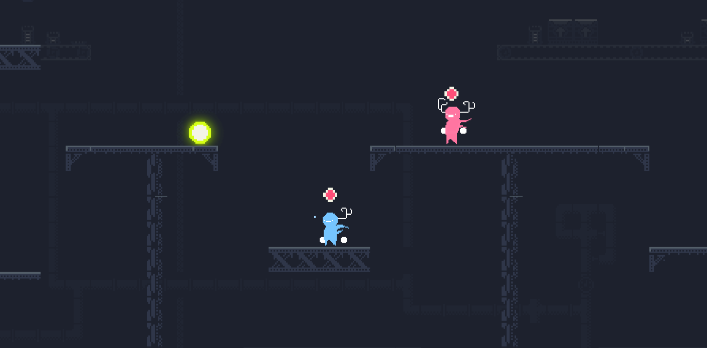
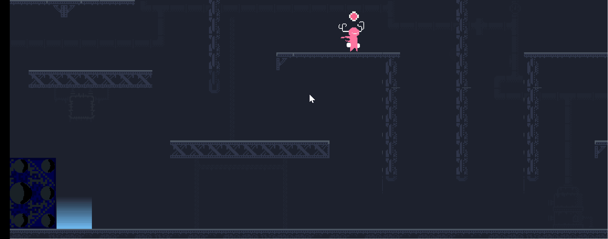
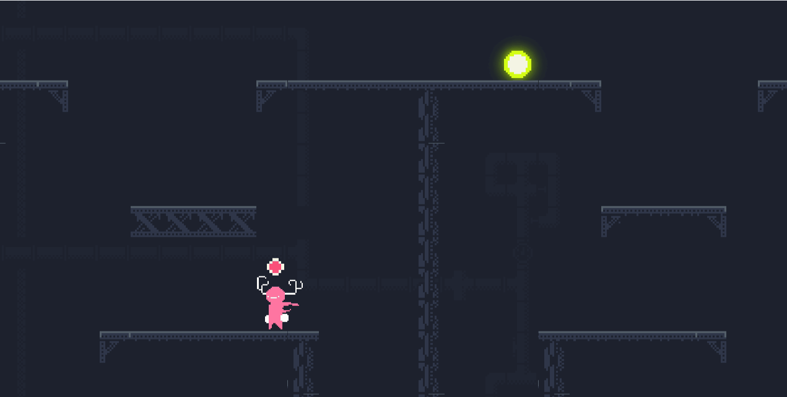

← DASHBOARD
Global Game Jam
| Development Time : 2 days
Unity 2D
1v1 Platformer
Competitive
A fast-paced 1v1 2D competitive platformer where two players compete to collect randomly spawning energy orbs and deliver them to their respective totems.
Players must balance movement, platforming skill, and combat as they race to reach the victory condition before their opponent.
Gameplay Features
- Energy orbs spawn from the top at random intervals which keep on decreasing after time.
- Players must locate and collect these orbs before their opponent.

- Each player can carry only one orb at a time.
- To score a point, the orb must be safely delivered to the player's own totem.

- Players can shoot their opponent, causing them to drop the orb they are carrying.

- Dropped orbs can be stolen, creating opportunities for counterplay and comebacks.
- The match continues until one player successfully delivers 10 orbs and wins the game.